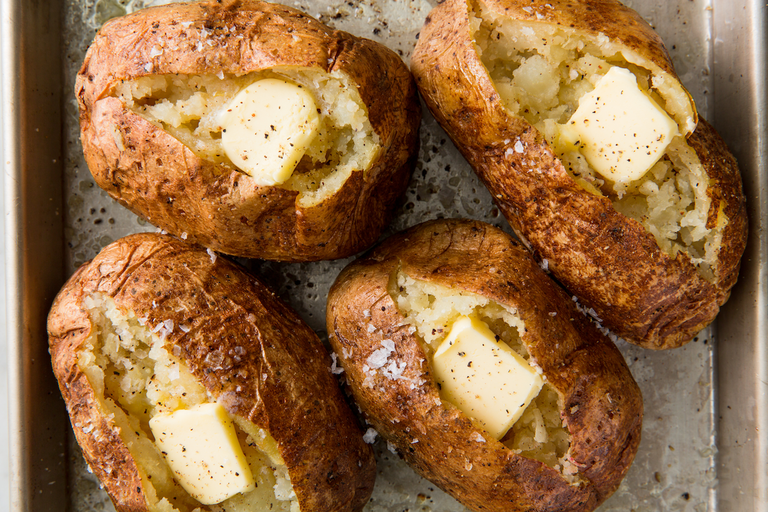

Baked Potato

Description
Each day, thousands of people search "how to bake potatoes." So please, do not be embarrassed to be here, you are definitely not alone. Though the only kitchen skill you might need is how to set your oven's timer, there are still a lot of ways you can go wrong. Here are our top baked potato tips for perfect results every time:
INGREDIENTS
- 4 russet potatoes, scrubbed
- Extra-virgin olive oil
- Kosher salt
- Freshly ground black pepper
Directions
- Preheat oven to 450°. Pierce potatoes all over with a fork. Rub with oil and season generously with salt and pepper, then place on a baking sheet, or on an oven-safe rack inserted inside a baking sheet.
- Bake until potatoes are easily pierced with a fork, about 1 hour. To make sure they're fully cooked, use an instant-read thermometer to measure the internal temperature; it should be 200°-205°.